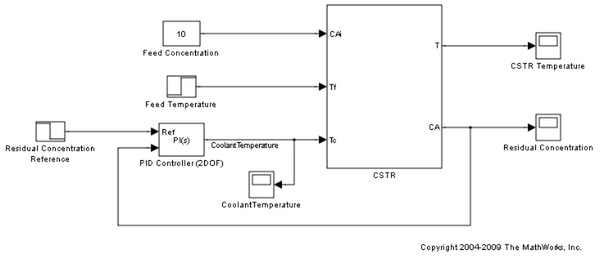
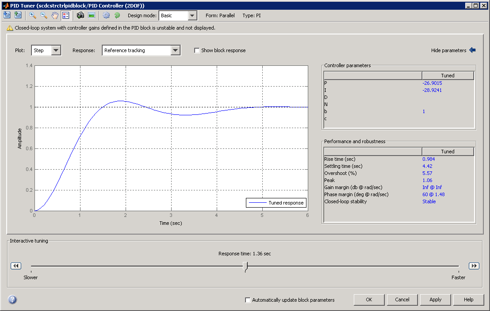
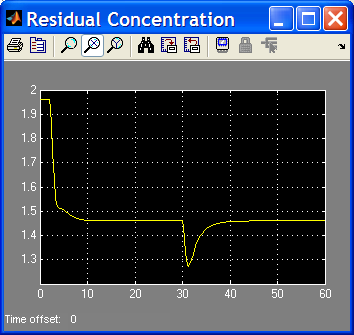
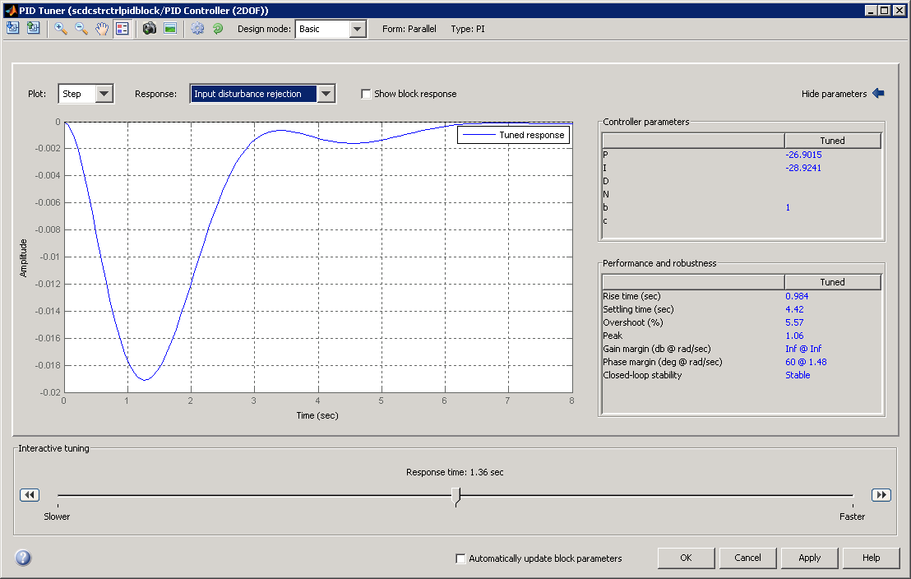
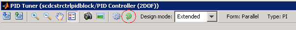
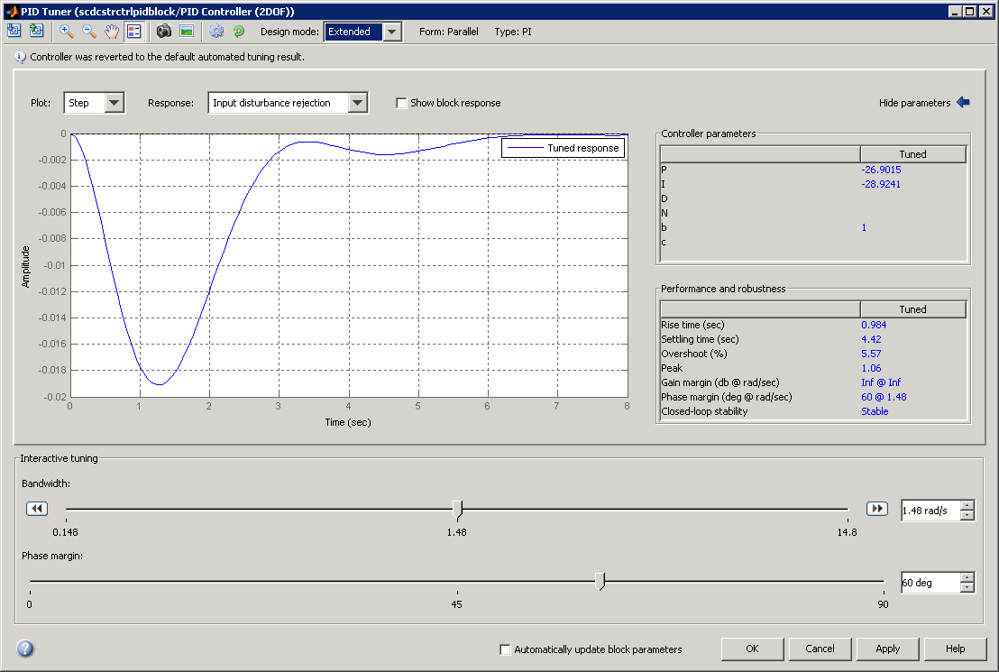
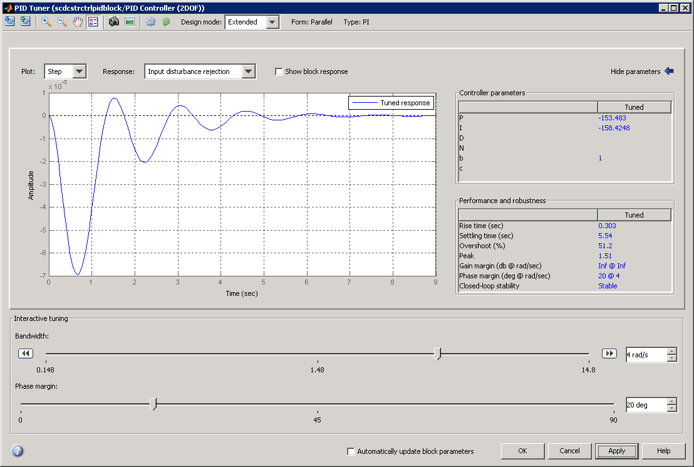
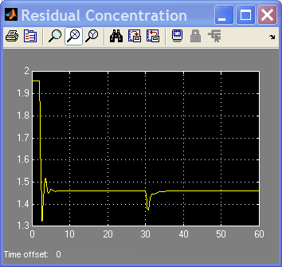
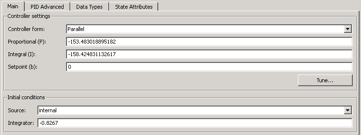
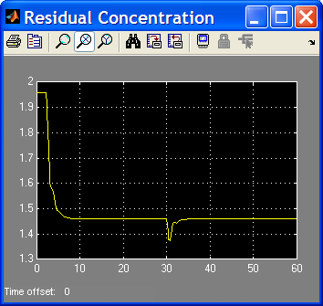

Designing a Simulink PID Controller (2DOF) Block for a Reactor
Contents
Introduction of the PID Controller (2DOF) Block
With a 2DOF PID controller, also known as ISA-PID controller, you can achieve good performance for both reference tracking and disturbance rejection. It contains a standard PID controller in the feedback loop and adds a pre-filter to the reference signal. The pre-filter helps produce a smoother transient response to set-point changes. In this example, you use a Simulink® PID Controller (2DOF) block to control a continuous stirred tank reactor (CSTR) and you design this 2DOF PID controller in the PID Tuner.
A typical design workflow with the PID Tuner involves the following tasks:
(1) Launch the PID Tuner. When launching, the software automatically computes a linear plant model from the Simulink model and designs an initial controller.
(2) Tune the controller in the PID Tuner by manually adjusting design criteria in two design modes. The tuner computes PID parameters that robustly stabilize the system.
(3) Export the parameters of the designed controller back to the PID Controller block and verify controller performance in Simulink.
Opening the Model
Take a few moments to explore the model.
open_system('scdcstrctrlpidblock');
 The CSTR plant is initialized at an equilibrium operating point. The nominal value of the residual concentration is 1.96 mol/L, which is the initial condition of the Residual Concentration Reference block and the Integrator1 block in the CSTR subsystem.
The initial condition of the integrator I0 in the PID controller block is determined by the equilibrium operating point. In this example, since we have a PI controller in parallel form,
I0 = u0 - ((b-1)*y0*P)
where u0 is the steady state controller output (300), and y0 is the steady state plant output (1.96). Since b is 1, I0=*u0*=300.
For background, see Seborg, D.E. et al., "Process Dynamics and Control", 2nd Ed., 2004, Wiley, pp.34-36.
Design Overview
In this example, control the residual concentration of the CSTR by manipulating reactor coolant temperature. The overall design requirements are:
- Track a sudden decrease of 0.5 in the reference signal from a Simulink step block Residual Concentration Reference. The detailed design requirements are:
Settling time under 10 seconds
Zero steady-state error to the step reference input
Overshoot below 0.1
- Reject a 5 degree sudden increase in the feed temperature from a Simulink step block Feed Temperature. The detailed design requirements are:
Settling time under 10 seconds
Peak deviation from steady state below 0.1
In this example you design a PI controller PID Controller (2DOF) in the PID Tuner to achieve good responses in both reference tracking and disturbance rejection.
Opening the PID Tuner
To launch the PID Tuner, double-click the PID Controller block to open its block dialog. In the Main tab, click Tune.

After you launch the PID Tuner, close the PID block dialog and move the PID Tuner beside the Simulink model. Also, open the residual concentration scope window.
Initial PID Design
When the PID Tuner launches, the software computes a linearized plant model. The software automatically identifies the plant input and output, and uses the current operating point for the linearization. The plant can have any order and can have time delays.
The PID Tuner computes an initial PI controller to achieve a reasonable tradeoff between performance and robustness. By default, step reference tracking performance displays in the plot.
Click the Show parameters arrow to view controller parameters P, I, b, and a set of performance and robustness measurements. In this example, the initial PI controller design gives a settling time of 4.4 second, which meets the requirement.
The following figure shows the PID Tuner dialog with initial design:

To test the initial design on the nonlinear model, click Apply in the PID Tuner. This writes the parameters back to the PID block in the Simulink model. Run a simulation and view the closed-loop response:

The transient response of disturbance rejection shows that its peak deviation is about 0.2, which exceeds the design requirement. You need to reduce the peak deviation by at least 50% using the PID Tuner.
Design for Disturbance Rejection in the Basic Design Mode
The PID Tuner provides step plot for different loop responses such as reference tracking (from r to y) and controller efforts (from r to u), etc. In this example since the disturbance occurs at the reactor feed temperature, the closest plot you can get is the input disturbance rejection plot that assumes a step disturbance occurs at the input of the plant model.
The following figure shows the disturbance rejection performance with initial controller:

You need to reduce the peak deviation from -0.019 to -0.009 (about 50%). First, try to reduce the peak deviation using the Basic design mode, which is the mode selected when the Tuner opens. Move the response time slider to the right to decrease the response time and make controller more aggressive. But you cannot meet the design requirements because reducing the peak deviation makes the settling time too long. To return to the initial automated design result, click the reset button in the toolbar that is the last button with green arrow.

Design for Disturbance Rejection in the Extended Design Mode
In the PID Tuner Extended design mode, you have more flexibility to adjust controller performance. You need some knowledge of frequency domain control design technology to take full advantage of this design mode.
To switch to the Extended design mode, select Extended in the Design Mode dropdown menu in the toolbar.
The following figure shows the PID Tuner in Extended design mode with the initial design:

Increasing the bandwidth makes the controller more aggressive and reduces the peak deviation. To maintain the settling time of disturbance rejection below 10 seconds, you also need to reduce the desired phase margin. This is a typical tradeoff between performance and robustness in controller design. View the effects of your change in the response plot. You can move both sliders to reduce the peak deviation to 0.007 while maintain the settling time within 10 seconds. One way to achieve this is:
- Bandwidth of 4 rad/sec
- Phase margin of 25 degree
The following figure shows disturbance rejection performance:

To test the new design on the nonlinear model, click Apply in the PID Tuner. Run a simulation and view the closed-loop response:

The disturbance rejection performance satisfies the requirements. However, because the controller is very aggressive, the overshoot of reference tracking exceeds the limit. You need to adjust the pre-filter in the 2DOF PID block to improve the reference tracking performance.
Completing PID Design with Set-point Weighting
The parameter b in an ISA PI or PID controller is the set-point weight on the reference signal feeding into the proportional gain of the controller. It has a range between 0 and 1, and its default value is 1. By reducing its value, the reference tracking performance becomes smoother. In this example, open the PID block dialog and set b to 0.
Because b and P are changed, you need to adjust the initial condition of the integrator I0 in the PID controller block to make sure the initial operating point is still at equilibrium. Since the relationship is
I0 = u0 - ((b-1)*y0*P)
where u0 is 300 and y0 is 1.96. With P from PID Tuner (-153.5) and b from manual adjustment (0), I0 becomes -0.8267. Update the initial condition of the integrator with this value and the simulation will start at the equilibrium operating point.

The following figure shows that there is no overshoot in reference tracking with the updated design.

In summary, to design a 2DOF PID controller with balanced performance in reference tracking and disturbance rejection, use the PID Tuner to achieve good disturbance rejection and then manually adjust set-point weights b and/or c in the block dialog to achieve good reference tracking. Notice that changing b and c does not affect closed-loop stability or disturbance rejection performance.
bdclose('scdcstrctrlpidblock')